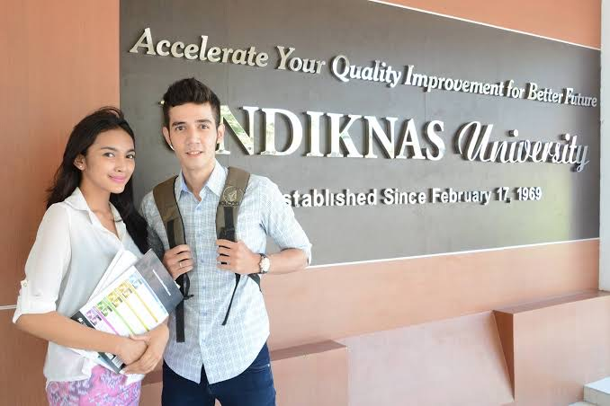

UNIVERSITAS PENDIDIKAN NASIONAL

UNDIKNAS
Adalah sebuah perguruan tinggi swasta di Denpasar, Bali.
Perguruan tinggi ini didirikan pada tahun 1969 oleh Prof. Dr. IGN Gorda, M.S. dan Drs. Ketut Sambereg, M.M.
Alamat : Jl. Bedugul No.39, Sidakarya, Denpasar Selatan, Kota Denpasar, Bali 80224
Telf : (0361) 723868
Rektor : Prof. Dr. Nyoman Sri Subawa S.T., S.Sos, M.M
DESIGN INI DI BUAT OLEH MADE SUKMAYASA
Profile sukmayasa dapat di lihat disini